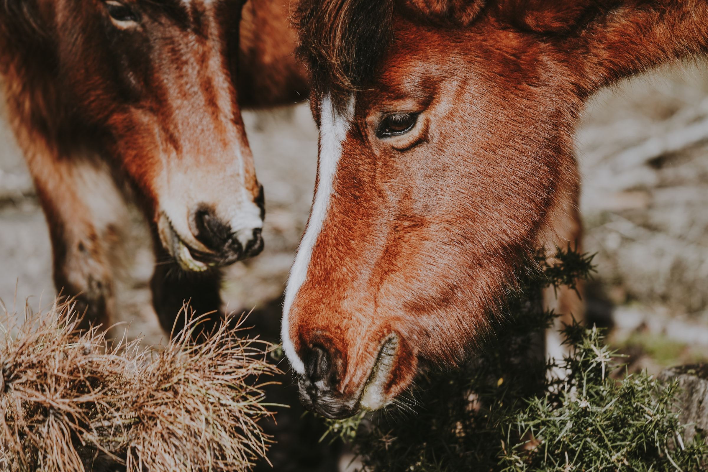

Transform your will
INTO ACTION!

Who
are we?
We are a non-profit civil association that works every day in the rehabilitation of mistreated equines which are rescued in emergency, negligence or abandonment situations.
We are committed to raising awareness in society in order to eradicate the problem of animal blood traction and equine slaughter. We invite you to get to know us better.

Why
volunteer?
Become a horse guardian. Accompany them from their rescue and throughout their rehabilitation until their full recovery.